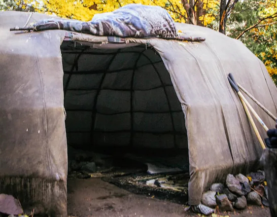
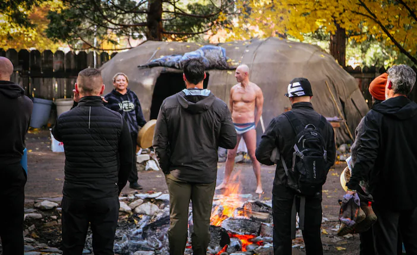

B904 · Sauna VS. Sweat Lodge
Hi {first_name},
I will never forget my first experience in a Sweat Lodge. It tested my spirit, along with the others around me, in a way I had not experienced before.
I felt as if a large weight was lifted off my back, and noticeable inner clarity arose.
In addition, I've found the Sweat Lodge to be helpful in my life for harnessing the inner resource needed to navigate times of overwhelm.
In my opinion, if we never touch our edges, not only will we not know what we're truly capable of, but also how we experience life can end up feeling dull, flat, or easily too much.
In this video, while in a sauna, I briefly explain some of the major differences between a sauna and a sweat lodge - something I’ve been asked multiple times by men who have an interest in the Men of Movement Retreat.
Photo: Sweat Lodge, Mt. Shasta, CA  One of the transformative sessions at this Men's event, led by a Native American elder, is a Sweat Lodge ceremony.
 Although both the sauna and Sweat Lodge involve intense heat, there are SIGNIFICANT differences between experiencing the two.
I hope you enjoy this video mini-breakdown discussing this very thing.
Yours in health and strength, Mike
P.S. At the Men of Movement retreat coming up June 8 - 11, the Sweat Lodge we partake in is a rite of passage guided by a Native American elder who has been running Lodges for over 40 years. There are still 5 available spots - schedule a call with me if you are a man interested in addressing the overwhelm and isolation that is all too common today. |